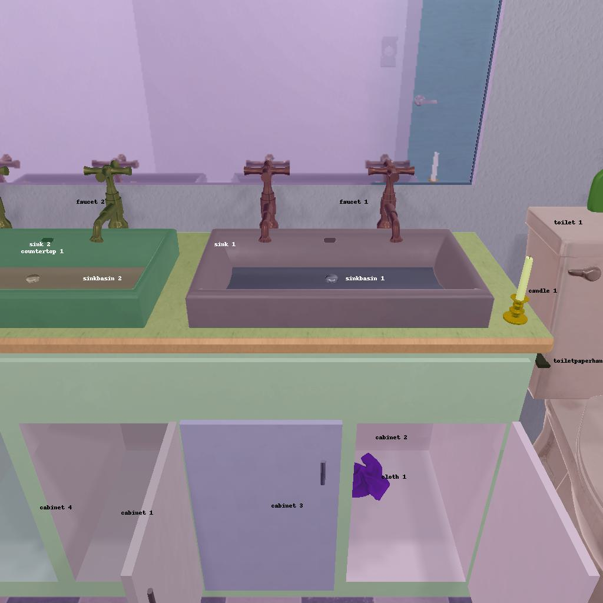

---------------------------------------------------------task: 9---------------------------------------------------------
--------------------------------------------------------------------------------------------------------------------------------------------------------------------
--------------------------------------------------------------------------------------------------------------------------------------------------------------------
Step:--------------------------------------------------------------------------11-------------------------------------------------------------------------------
----------------------------------------
VLM Prompt:
Image1:
Image2:
**Instruction**
1. Analyze the provided image to identify all visible household objects, focusing on those relevant to the task description "put some soapbottle on toilet."
2. Use the analysis of the image and the task hint "The agent must find an object of the desired type, pick it up, find the correct location to place it, and put it down there." to answer the question: what is the most reasonable action in the choices for the task description "put some soapbottle on toilet"?
4. Decide and write the answer using the template: The answer is: (i): , where i is the real number. If there is no desired object in the image, search every place based on **Initial Observation** to find the object. And if no one is exactly correct, choose a similar answer.
**Initial Observation**
You are in the middle of a room. Looking quickly around you, you can see bathtub (1), bathtubbasin (1), toilet (1), cabinet (1-4), sink (1-2), countertop (1), sinkbasin (1-2), toiletpaperhanger (1), towelholder (1), garbagecan (1), handtowelholder (1)
**Answer Choices**
(1): go to bathtub 1
(2): go to bathtubbasin 1
(3): go to toilet 1
(4): go to cabinet 2
(5): go to sink 1
(6): go to sink 2
(7): go to countertop 1
(8): go to cabinet 4
(9): go to sinkbasin 1
(10): go to sinkbasin 2
(11): go to toiletpaperhanger 1
(12): go to towelholder 1
(13): go to garbagecan 1
(14): go to handtowelholder 1
(15): open cabinet 3
(16): close cabinet 3
(17): take faucet 1 from cabinet 3
(18): take faucet 2 from cabinet 3
(19): take cloth 1 from cabinet 3
(20): take candle 1 from cabinet 3
(21): take spraybottle 1 from cabinet 3
**Answer**
Let's think step by step by following the instructions.
----------------------------------------
----------------------------------------
Original Response:
First, we need to identify all visible household objects relevant to the task description "put some soapbottle on toilet." From the initial observation, we can see that there is a toilet (toilet 1) and several cabinets (cabinet 1-4).
Next, based on the task hint, we need to find an object of the desired type, which in this case is a soap bottle. Looking at the images provided, we do not see any soap bottles on the countertops, sinks, or visible in the open cabinet (cabinet 3). Therefore, we must search every place based on the initial observation to find the object.
Since the soap bottle is not immediately visible, the most reasonable action would be to look inside the cabinets that are not yet open. Cabinet 2 is slightly ajar, suggesting it may have been recently accessed or contains frequently used items such as a soap bottle. Therefore, the most logical next step is to open cabinet 2 and search for the soap bottle.
The answer is: (4): go to cabinet 2.
----------------------------------------
----------------------------------------
>>> Refine Original VLM Response and Get Pure Action: go to cabinet 2
----------------------------------------
-----------------------------------------------------------------
Running time: 10.614905834197998 seconds
Total Money: 3.9907699999999986
-----------------------------------------------------------------
-----------------------------------------------------------------
Text Observation:You arrive at loc 4. The cabinet 2 is open. On the cabinet 2, you see a faucet 1, a faucet 2, a cloth 1, a candle 1, and a spraybottle 1.
-----------------------------------------------------------------
UNSUCCEED